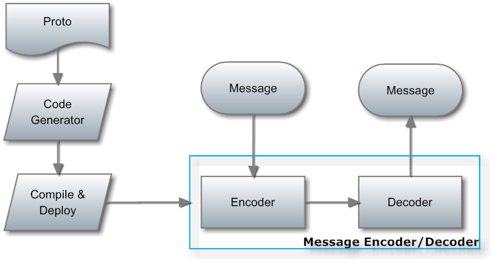
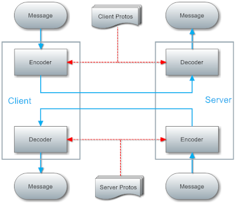

在实际编程中，为了减少数据传输带宽的消耗，提高传输效率，pomelo提供了对消息的压缩，包括基于字典的对route的压缩和基于protobuf的对具体传输数据的压缩。
route压缩
在实际编程中，网络带宽的有效数据负载率是一个值得考虑的问题。特别地，对于移动客户端来说，网络资源往往并不是很丰富，为了尽可能地节省网络资源，往往需要尽大可能地增加数据包的有效数据率。
route问题
在pomelo编程中，pomelo中的route是用来确定消息的分发路径，将其交给相应的服务器和服务处理的。route分为两类，由客户端发给服务端消息时使用的route和服务端向客户端广播时使用的route。
前一种route是由服务器自动生成的，其中的字段就代表了对应的方法在服务端的位置。如“area.playerHandler.attack”则表示在“area”类型的服务器上的“playerHandler”提供的“attack”方法，其格式为".."。 路由信息过长，使得有效消息数据负载率大大降低。例如，在聊天应用中，如果用户的发言仅仅是一个字符，结果不得不携带一个route,"chat.chatHandler.send",这样使得有效数据负载率大大降低。
后一种route是服务端想客户端推送消息时使用，是客户端的路由信息，如“onMove”，“onAttack”等，其格式一般为"on"这些字段是由用户自己定义的。虽然可以定义很短的路由，但是那样会造成可读性变差，不利于代码阅读。
一般来说，当应用固定后，具体路由就不会再变动，因此可以考虑通过一种简单替换的方式对路由信息进行压缩。
基于dict的压缩
pomelo中实现了基于字典的route压缩，目前route压缩功能仅仅支持hybridconnector，sioconnector目前无法使用route压缩。其实现原理如下：
对于系统生成的route，也就是服务端的路由信息，即格式为".."的路由信息，在系统启动时由CoDictionary组件进行服务端路由信息扫描，然后会对每一个route生成唯一的字典项，由一个无符号小整数标识。
对于用户自定义的route，也就是客户端的路由信息，即格式为"on"，则需要用户提供一个自定义的route列表，会根据这一个列表对每个用户自定义的route生成一个对应的字典项，即也就是一个无符号小整数。
在开启字典功能的状态下，使用hybridconnector的时候，当协议握手的时候，服务端会将整个字典的消息发送给客户端，这样客户端和服务端都会拥有相同的具体route无符号整数的对应关系。
当有消息传递时，其中的route在发送时会被替换为在字典项,而接收端会自动还原，这一过程对于用户而言是完全透明的。
使用route压缩
目前仅仅在hybridconnector中实现了支持，启用此功能只需在app.js中配置开启即可，示例如下：
app.set('connectorConfig',
{
connector : pomelo.connectors.hybridconnector,
heartbeat : 3,
useDict : true // enable route compression
}
});客户端的路由信息，也就是用户自定义的路由信息，需要用户自己通过配置文件配置，具体的配置文件为config/dictionary.json，在这个文件中加入一个字符串列表即可，示例如下:
[
"onDropItem",
"onAttack",
"onDied",
"onMove",
"onRevive",
"addEntities",
"onRemoveEntities",
"onPathCheckout"
]注意：对于没有加入到这个列表中的客户端路由信息，依然会使用原始的路由，而不会使用整数，pomelo在打包消息的时候会进行判断，如果字典项里有相应的路由信息，那么会使用字典项，如果没有的话，会使用原始的路由信息。这一切对用户是透明的，用户只需要配置好就行，不用关心其具体实现。
基于protobuf的传输数据压缩
在进行消息传输时，pomelo实现了基于protobuf的数据编码协议，与其他的编码协议如xml，json相比，protobuf有着更好的传输效率和压缩比率。在我们的lordofpomelo项目中，使用protobuf进行数据编码后的消息大小只有基于Json的编码的20%左右。
protobuf协议介绍
protobuf协议是由google制定的，主要用于其内部的rpc调用和文件编码。原生的protobuf包括两部分内容：基于二进制的数据编码协议和基于proto元数据的代码生成器。首先，需要根据每条消息来编写对应的proto文件，然后使用google提供的代码生成器，基于proto文件来生成相应的编码器和解码器，然后使用生成的编/解码器来进行编/解码操作，对应的流程如下图：

这种方式的优势是代码静态生成，运行时不需要proto文件信息，而且可以根据具体的信息内容对代码进行优化，编解码的时候不需要类型元信息，效率很高。但缺点也十分明显：使用复杂（涉及到代码生成，编译，部署），改动成本高昂（需要重新生成，编译代码，并对代码进行部署），需要生成大量新代码（每个消息都需要一个独立的编码/解码器）。 关于protobuf协议的更多内容，可以参见其官网protobuf项目。
pomelo中的protobuf
原生的带有代码生成器的protobuf过于重量级，缺乏灵活性，任何消息的修改都会是一个非常重量级的操作，而这个在pomelo中，由于pomelo是能够快速开发的，因此也必须要求代码不能有编译阶段，所有的类型信息应该在运行时进行评估。因此，我们没有采用生成代码的方式，而是根据proto文件的定义，对消息进行即时的解析。
在pomelo中，我们实现了一个通用的protobuf编/解码器，以及一个proto文件解析器。通过分析proto文件内容，实现了对消息的编码/解码。这样，当修改/添加消息类型时，只需要修改对应的proto文件就可以了。具体的运行流程如下图：

从上图可以看出，与原生的protobuf生成代码的方式相比，pomelo中的解决方案要更将灵活，轻量。不需要生成任何代码，在运行时通过proto文件中对消息的定义，实现对消息的动态编码/解码功能。
proto 文件定义
原生的protobuf中，每一个消息都与一个proto中的message定义对应，而在生成编码/解码器之后，这些message的定义不再被使用。而在pomelo中，因为我们需要proto的内容来动态的对消息进行编码/解码，因此需要维护一个完整的protos信息表, 我们将所有的proto定义放在一个json文件中，通过key来进行区分，在pomelo中，key就是消息的route。我们的proto文件使用了类似与原始proto的语法，不过是使用了json格式，示例如下：
"onMove" : {
"required uInt32 entityId" : 1,
"message Path": {
"required uInt32 x" : 1,
"required uInt32 y" : 2
},
"repeated Path path" : 2,
"required uInt32 speed" : 3
},
"onAttack" : {
"required uInt32 attacker" : 1,
"required uInt32 target" : 2
}在pomelo中，对于同样route的消息，如'area.playerHander.attack'，在客户端和服务端的格式可能完全不同，这就意味着对于客户端的编码器和解码器对于同样route的消息需要不同的定义。因此，我们需要两套protos文件，server protos和client protos，具体的关系如下图： 
使用protobuf
虽然protobuf的实现看上去十分复杂，但由于这一层对用户是完全透明的，使用会非常简单。用户只需要通过简单的两步定义就可以在原有的项目中开启protobuf功能。
- 首先，需要在connector组件上打开protobuf开关，在app.js中的配置如下：
app.set('connectorConfig',
{
connector : pomelo.connectors.hybridconnector,
heartbeat : 3,
useProtobuf : true
});实际上需要加入的就是“useProtobuf：true”这一项。当设置这一标识后，pomelo会在客户端握手时将protos内容同步到客户端，并默认开启protobuf压缩功能。
在protobuf功能开启用，用户还需要加入protos定义来实现对具体消息的编码/解码。protos文件默认在/game-server/config目录下，包括两个文件：serverProtos.json和clientProtos.json，分别表示服务端->客户端消息的protos和 客户端->服务端消息的protos。只要在其中加入有效的proto定义，就可以开启对应消息的protobuf编码功能，CoProtobuf组件会自动加载这两个proto文件。
当然pomelo中的protobuf实现对原有项目是完全兼容的，你可以直接在老的项目中打开protobuf开关而不会引起任何问题。只是当proto定义是空的，默认所有的消息都不会经过protobuf压缩，而是采用默认的二进制编码进行传输。
当你想对某个消息进行protobuf编码时，只需要在对应的protos文件（serverProtos.json或clientProtos.json）中加入对应的protobuf项，pomelo在启动时就会自动识别并对消息进行压缩，而不会对其他未定义的消息产生任何影响。
总结
在这部分，介绍了pomelo中实现的对数据的压缩。通过对数据的压缩提高了带宽的有效数据利用率，使得在一些带宽以及流量敏感的环境中，pomelo能够更好地工作。目前pomelo的route以及基于protobuf的数据压缩仅仅支持hybridconnector，对于sioconnector，是使用json作为通信格式的，目前不支持对其进行压缩。